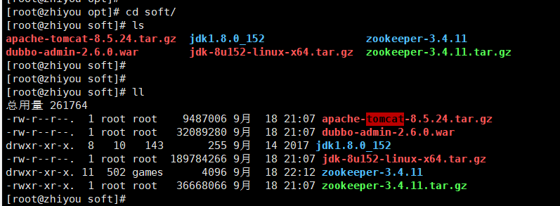
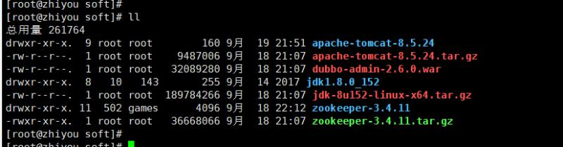
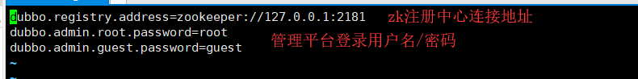
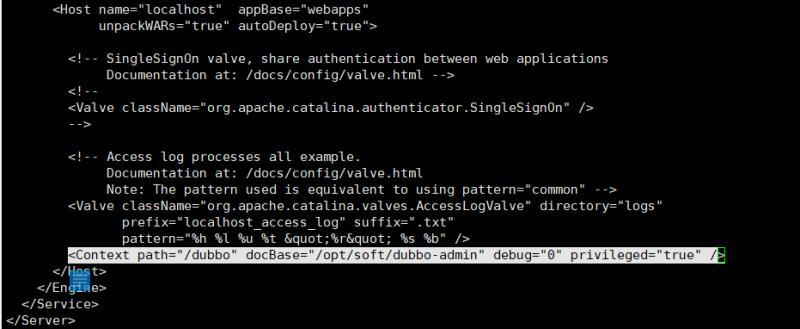
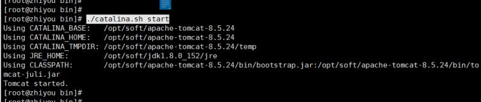
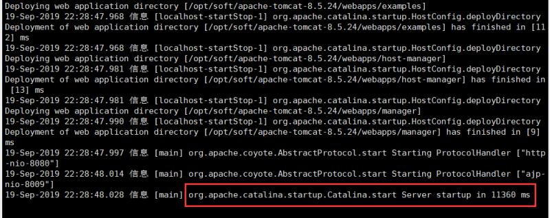
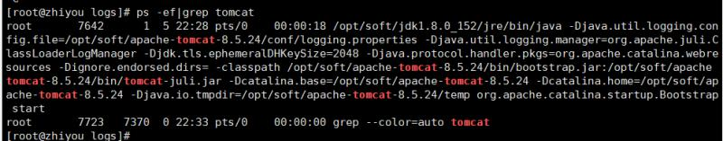
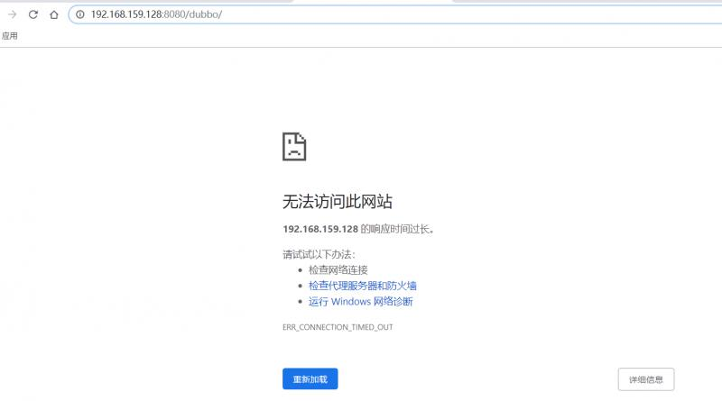
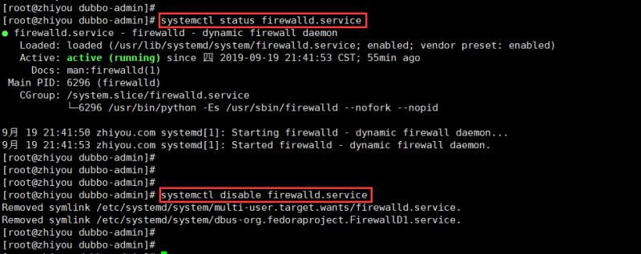

原文连接:https://www.cnblogs.com/zhiyouwu/p/11553204.html
centos7上部署dubbo管理控制台dubbo-admin
1 准备工作
- 服务器：系统centos7， 内存4G， 存储60G， ip 192.168.159.128
- 软件环境： 安装有jdk1.8， 具体安装方式参见《centos7上安装jdk1.8》博文； 安装并启动zookeeper，具体安装步骤参见《centos7上安装zookeeper》博文；
- 软件准备： 上传tomcat、dubbo-admin.war文件至服务器 /opt/soft目录下(其中tomcat采用版本apache-tomcat-8.5.24， dubbo-admin采用版本dubbo-admin-2.6.0.war)

2 解压tomcat
apache-tomcat作为容器，在服务器端解压即可使用，这里使用tar命令解压apache-tomcat-8.5.24压缩包，得到apache-tomcat-8.5.24文件夹：
tar -zxvf apache-tomcat-8.5.24.tar.gz

3 解压dubbo-admin压缩包
本文采用apache-tomcat部署dubbo-admin程序，但是这里换一种部署方式，不直接将dubbo-admin.war包放置在apache-tomcat文件夹的webapps下，而是在其配置文件server.xml中使用<Context/>中配置dubbo-admin的解压路径，故需要解压dubbo-admin.war包，此处解压war包使用unzip指令：
unzip -d dubbo-admin-2.6.0.war
注意： 如果服务器没有unzip指令，需要安装unzip指令，本文使用 yum install unzip 的方式安装！
- 安装unzip指令：
执行上述unzip dubbo-admin-2.6.0.war -d dubbo-admin指令后，系统可能会出现-bash: unzip: 未找到命令错误信息，这时我们需要安装unzip指令，使用yum install unzip指令安装（需要服务器可以连接外网）：

安装完 unzip 指令之后，解压dubbo-admin-2.6.0.war 安装包，得到dubbo-admin 文件夹：

解压完成之后，我们看下其内部配置的zookeeper连接信息以及登录管理平台的信息，具体路径在解压的文件夹下的 dubbo-admin/WEB-INF/dubbo.properties，我们使用 vi 命令打开该配置文件，内容如下：

我们这里就暂时不修改其配置，如有不一致的信息，按需更改即可！
4 配置tomcat
上文说过，本次采用在tomcat的server.xml中配置dubbo-admin服务，我们找到server.xml的路径，其在tomcat目录下的conf下，我们使用 vi 命令编辑server.xml，在 </Host> 行上方添加 <Context/> 配置，具体配置如下：
<Context path="/dubbo" docBase="/opt/soft/dubbo-admin" debug="0" privileged="true" />

其中，path配置的路径表示访问路径， docBase配置的路径表示dubbo-admin解压的路径~
5 启动tomcat并检查tomcat启动情况
进入tomcat目录下的bin目录，执行以下指令启动tomcat，启动端口为8080：
./catalina.sh start

从上图我们可以看到系统提示启动成功，这时我们来检查一下其是否成功启动！
- 1 查看启动日志，进入tomcat/logs目录，使用
tail -100f catalina.out查看日志：

注意： 图中红色标记的表示tomcat启动成功！接下来我们查看下tomcat进程情况
- 2 使用
ps -ef|grep tomcat命令查看tomcat进程：

同样，可以看到tomcat的进程存在！
6 访问dubbo-admin管理中心
我们在浏览器中输入： http://{ip}:{port}/dubbo ,例如 http://192.168.159.128:8080/dubbo/。 但是很遗憾，我们可能遇到下列的问题：

是不是感觉很奇怪啊，我的服务启动了啊，为什么无法连接呢？哈哈，看看你的centos系统的防火墙是不是开了呢？如果开了，关闭它！
- 停用防火墙命令：
systemctl status firewalld.service - 禁止防火墙开机自启：
systemctl disable firewalld.service

好了，我们重新一下服务器，然后再重新启动一下apache-tomcat，再次访问 http://192.168.159.128:8080/dubbo/，输入用户名/密码（root/root 这里需要注意，并不是上文的root/guest，至于为什么之后会在评论中进行解释），进入页面：
这里可以切换中文，对于英文差的是不是超赞！好d了，至此，我们已经完成了对dubbo-admin的部署！下面，补充一下设置dubbo-admin的开机自启动~
设置dubbo-admin开机自启动
这里不介绍具体的设置步骤了，具体步骤可以参考《centos7上安装zookeeper》一文！这里粘贴下配置脚本：
#!/bin/bash
#chkconfig:2345 20 90
#description:dubbo-admin
#processname:dubbo-admin
CATALANA_HOME=/opt/soft/apache-tomcat-8.5.24
export JAVA_HOME=/opt/soft/jdk1.8.0_152
case $1 in
start)
echo "Starting Tomcat..."
$CATALANA_HOME/bin/startup.sh
;;
stop)
echo "Stopping Tomcat..."
$CATALANA_HOME/bin/shutdown.sh
;;
restart)
echo "Stopping Tomcat..."
$CATALANA_HOME/bin/shutdown.sh
sleep 2
echo
echo "Starting Tomcat..."
$CATALANA_HOME/bin/startup.sh
;;
*)
echo "Usage: tomcat {start|stop|restart}"
;; esac
Blog:
- 简书： https://www.jianshu.com/u/91378a397ffe
- csdn： https://blog.csdn.net/ZhiyouWu
- 开源中国： https://my.oschina.net/u/3204088
- 掘金： https://juejin.im/user/5b5979efe51d451949094265
- 博客园： https://www.cnblogs.com/zhiyouwu/
- 微信： WZY1782357529 (欢迎沟通交流)